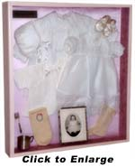
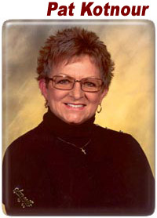
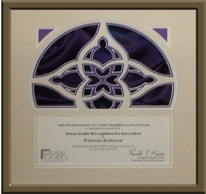

Right before Christmas, and with many mounting jobs still not complete, I dislocated my left thumb and ended up in a cast for six weeks. At the time I had two football jerseys, some doilies, and the baptismal gown (pictured on the "How It Works" page) scheduled for framing.
Being a one person frame shop, and even though my husband is very supportive (he does all the cooking), he has the patience of a gnat when it comes to doing anything tedious like the sewing involved in mounting doilies and T-shirts. Needless to say I was a desperate woman who really didn't want to disappoint the customers. That's when I discovered how resourceful I can be when faced with a disaster in the making. I started looking through my sewing box for something that would help me with all these special projects and found an old tool that I used when I was a manufacturer's rep years ago. To my relief, it worked amazingly well for making the holes needed , figuring I could sew with one hand. That’s when it occurred to me that maybe I could get some tools and fasteners that were smaller and more adaptable to fabric mounting.
 I discussed my idea with my local distributor's salesperson and he thought it was one of the best ideas he had seen in a long time. With the strong encouragement of this salesperson and my local distributor I jumped in head first, thus the beginning of ATTACH-EZ Object Mounting Systems for Custom Picture Framing.
That same day I called the company that made the tools needed to market ATTACH-EZ , and once I was able to convince them that I was not some nut case who had too much time on her hands, they became very interested in my ideas. Picture framing was a whole new industry for their product lines, and together we developed the perfect tools for use in the ATTACH-EZ process and kits.
As time has gone on I have developed more time saving products such as EZ-Tach, a mounting system to help mount all types of 3D art . My three educational DVD’s, which include four and a half hours of demonstrations also make it a breeze for anyone new to the framing industry to quickly learn to use any of my methods. Attach-EZ takes much of the labor out and puts the profit back in to shadowbox art projects. The time savings alone is incredible! For new framers as well as established shops there is no doubt that it has become one of the “must haves” in modern framing equipment today.
Pat Kotnour has owned and operated her own successful businesses for 37 years. First as manufacturers rep in the garment industry, and then for the past 17 years she has owned and operated a high end frame shop in MN, where she is a lifelong resident. Pat is a very creative, mostly self taught framer who has made it her mission to help framers make money on labor intensive projects without doing harm. For those who are familiar with her story, the phrase necessity is the mother of invention is a fact that has made the company that she founded a household word in the framing industry in just 9 short years.
As the owner and creator of Attach-EZ Object Mounting Systems for Custom Picture Framing Pat has been able to develop many easy ways for framers to mount fabric and 3D art. She teaches ways to make beautiful, high end presentations that are easy and economical to produce. She guest writes for Décor magazine …a leader in the industry, and has been called “The Framers Best Friend" by Décor. She now has 3 educational DVD's where demonstrates easy, reversible ways to mount object art . She now has added a new dimension to her area of expertise with an easy frame repair system. Her motto is “first do no harm, but make some money while you are doing it.”
As an active member of the Professional Picture Framers Association, and the President of the North Central chapter, Pat is often asked to teach classes at trade shows, and to guest speak at PPFA chapter meetings, as well as other industries functions such as the floral and gift market.
Even with her busy schedule Pat manages to make sure that everyone gets the right answers when they need help. She handles all her company’s technical service work, and… most of the time… will be the one who answers the phone when you call.
Classes include:

Vivian Kistler Recognition for Innovation Award 2013:
Pat Kotnour, Attach-EZ
This award is given by the Professional Picture Framers Assoc. to the person or company who has impacted the industry the most with their innovation.
The winner of this award – named for the late Vivian Kistler, framing industry educator and author, herself a recipient of the PPFA Innovation Award – is Pat Kotnour, recognized for re-purposing products from other industries to create easy. archival, and economical solutions, altering and/or packaging these items in kits and making them easily accessible to the framing industry. These include Attach EZ's quick and easy mounting methods for 3D textiles and object art. Kotnour also introduced Invisi-mount a Non-Glare Clear Film as an alternative and used for encapsulation of paper art and also developed EZ Fix & Fill and instructs framers on how to correct imperfections, scratches and repair on wood mouldings.
Kotnour demonstrates at trade shows and brings her classes to Chapter meetings at a minimum cost, rebating a percentage of the sales she makes back to the chapters and members. Kotnour also was founder and first president of the North Central chapter, and her hard work and tenacity helped them get a strong start and put on a very successful trade show and educational conference.
{kind=link}